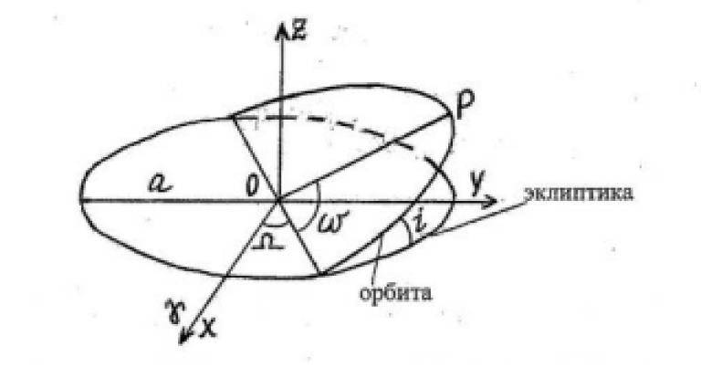

Теория симулятора орбит и орбитальных движений
Главная страница
О проекте
Ссылки на источники картинок для сайта
2024 год
Проект для МГТУ им. Баумана
Симулятор орбит и орбитальных движений
Orbitalika

Эксцентриситет — мера того, насколько орбита небесного тела отличается от круговой.
Он определяется как отношение расстояния между фокусами эллипса к его большой оси.
При эксцентриситете, равному нулю, орбита является круговой. При значениях от 0 до 1 — орбита эллипсоидная. При эксцентриситете, равному 1, орбита является параболической, а при эксцентриситете больше одного — гиперболической.
Однако наш симулятор рассчитывает только круговые и эллипсоидные орбиты.
Наклонение — угол между плоскостью орбиты тела и опорной плоскостью, которая обычно является плоскостью экватором центрального тела или плоскостью орбиты Земли вокруг Солнца. Оно измеряется в градусах.
Долгота восходящего угла — угол между точкой, в которой эклиптика пересекает небесный экватор, и восходящим узлом орбиты небесного тела (точкой, в которой орбита тела пересекает опорную плоскость с юга на север). Измеряется в градусах.
Аргумент перицентра — угол между восходящим узлом орбиты небесного тела и перицентром (точкой на орбите, наиболее близкой к центральному телу). Он измеряется в градусах.
Построение и симуляция орбиты происходит на основе так называемых «Кеплеровых элементах орбиты». Выделяется шесть элементов:
Большая полуось — это половина главного диаметра эллипса, по которому движется небесное тело вокруг другого небесного тела. Она измеряется в астрономических единицах.
Если Вы хотите ознакомиться с формулами, по которым рассчитывается и симулируется орбита, то Вы можете посмотреть их, изучив код нашего симулятора на Github’е нашего проекта.
Ссылку на Github смотрите в разделе «О проекте».